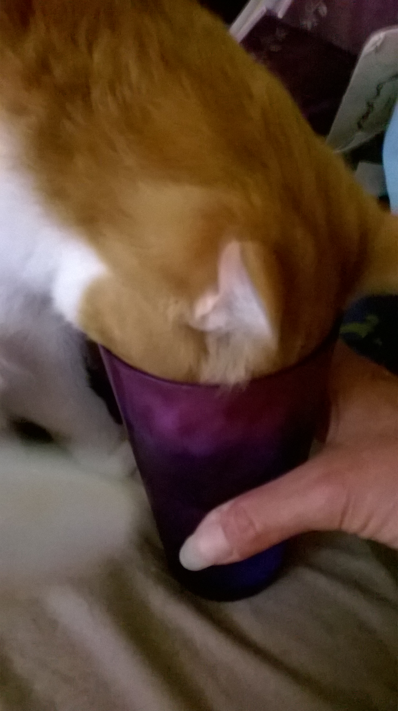

Momma Kitty, Patches
My kids were playing outside and this cat showed up. She was very friendly and didn't have a collar. We had no idea where she came from and, of course, the kids wanted to keep her. Long story short, she was my neighbor's barn cat and he didn't mind if we kept her. We took her to the vet and found out she was pregnant. She had a litter of 3. We found homes for 2 of them and kept the third one, Trouble.
My First Name is Trouble
Meet cat number 2. He was the first of the litter to start walking and momma always had to chase after him! As he got older, he was always in trouble for something. Usually, for sleeping in the bathroom closet on our clean bath towels or sticking his head in someone's cup of water to get a drink.

Don't Let The Glass Fall Over
The Final Four: George, Milo, Elsa & Elroy
2012, Easter Sunday, I went in the garage and saw 4 kittens run under the truck. My husband broke a window in the garage door and since the roof overhang kept the rain out, he didn't fix it right away. What a safe place for a feral cat to have her babies! As the days went on, I kept finding baby bunnies in the garage in various stages of being eaten. So, I bought some kitten food and put a litter box out there. I saw one of the kittens using the litter box and he had worms so bad, it looked like spaghetti! I took them all to the vet to be dewormed. My intention was to take them to the shelter when they got old enough, because kittens have the best chance of being adopted. In talking to the vet, all the shelters were full. So, by the time they were old enough to be away from their mother, every body wanted to keep them except my husband. My daughter had a friend who agreed to take George, but my husband said he wanted to keep that one. Oh my gosh, Mr. "we already have two cats" actually wanted another one! I said, if we keep one, we're keeping all of them!
 George
George